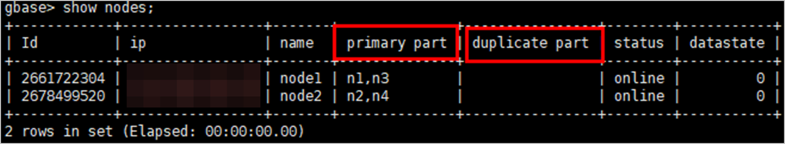

Failed to restore the GBase incremental copy to a new location. The error code is 1577212932.
The database topology of the backup copy is inconsistent with that of the target location for restoration.
su - Database username
gccli
show nodes;
View the values of primary part and duplicate part in the command output and check whether the parameter values of the two databases are consistent.
